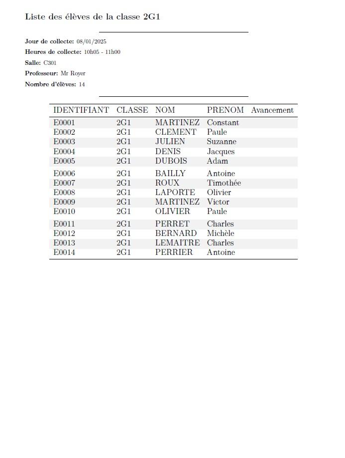

![]()
Le publipostage avec Quarto permet de générer automatiquement des documents personnalisés en combinant un modèle (template) et des données provenant de fichiers structurés (comme des tables CSV). Cela facilite la création de rapports, lettres ou tout autre contenu répétitif et dynamique, tout en tirant parti des capacités de Quarto pour intégrer des analyses et des visualisations avec R ou d’autres langages.
Introduction à Quarto
Quarto est une plateforme puissante et flexible conçue pour créer des documents dynamiques, des rapports, des présentations, des blogs ou même des livres. Elle s’appuie sur le langage Markdown et offre une intégration fluide avec plusieurs langages de programmation, dont R.
En utilisant Quarto avec R, vous pouvez combiner des analyses statistiques, des graphiques et du texte explicatif dans un même document reproductible. Quarto prend en charge les notebooks interactifs, les visualisations avancées (comme celles produites avec ggplot2 ou Plotly), ainsi que des outils de publication en ligne pour partager vos travaux.
Avec sa compatibilité multi-langages, Quarto permet aussi de collaborer avec des utilisateurs de Python, Julia ou d’autres outils, tout en profitant de la richesse de l’écosystème R. Que ce soit pour des rapports professionnels, des tutoriels pédagogiques ou des projets de recherche, Quarto constitue un atout incontournable pour des contenus clairs, élégants et dynamiques.
Le projet
On cherche à créer des listes d’élèves en vue d’un affichage pour examen. L’output est un fichier pdf dont chaque page est la liste des élèves d’une classe, en précisant le nom de la classe, la salle, le professeur référent, la date et l’horaire. Toutes ces informations se trouvent dans deux tables classes et eleves.
Voici un exemple:

Le template Quarto
L’en-tête du fichier
Commençons par créer un document Quarto et appelons le temp_quarto.qmd. L’entête yaml est très simple, ce sera:
temp_quarto.qmd
---
format:
pdf:
geometry:
- top=20mm
- bottom=30mm
- left=20mm
- right=20mm
documentclass: article
params:
classe: ""
jour: ""
heure: ""
salle: ""
prof: ""
---params est la liste des paramètres que l’on va passer au template afin de générer une classe en particulier (voir Team, « A step-by-step guide to parameterized reporting in R using Quarto — rfortherestofus.com » et « Generate multiple presentations with Quarto parameters — jumpingrivers.com »). On utilisera:
classe: le nom de la classejour: le jour de l’examenheure: l’heure de l’examensalle: la salleprof: le nom de l’enseignant chargé de la classe
On aurait pu limiter les paramètres passés au template à un identifiant de classe, mais dans le cas d’un très grand nombre de classes, cela ralentirait le process puisqu’il faudrait charger la table classes à chaque rendu de template.
Notez qu’il est impossible de passer autre chose qu’une valeur (numérique, caractère ou booléenne) en paramètre. De plus, les données de l’environnement ne sont pas accessibles dans un document quarto. En effet, un document quarto est une “bulle” qui doit appeler ses propres packages et données.
Vous pouvez renseigner une valeur par défaut aux paramètres, par exemple:
temp_quarto.qmd
params:
classe: "2G3"
jour: "24/12/2024"
heure: "8:30"
salle: "B401"
prof: "Mme Chombier"C’est utile lors des tests du template. En effet, cela permet de visualiser un exemple de rapport, en vue d’ajuster la forme de celui-ci.
Packages et données
Le premier chunk doit appeler les packages et les données. Il prend le paramètre yaml include: false de façon à ce que le code du chunk n’apparaisse pas ainsi que les messages générés lors de son exécution.
```{r}
#| label: packages_donnnees
#| include: false
library('dplyr')
library('knitr')
library('kableExtra')
eleves <- read.csv2('_donnees/eleves.csv')
nb_eleves <- eleves %>%
filter(classe == params$classe) %>%
nrow()
```Le titre et les références de la classe
Nous utiliserons les ‘inline chunks’ de Quarto (voir « Inline Code – Quarto — quarto.org »). Cahque inforamtion est passée par les paramètres, et nous avons calculé le nombre d’léèves de la classe dans le chunk packages_donnees.
temp_quarto.qmd
# Liste des élèves de la classe `r params$classe`
***
**Jour de collecte:** `r params$jour`
**Heures de collecte:** `r params$heure`
**Salle:** `r params$salle`
**Professeur:** `r params$prof`
**Nombre d'élèves:** `r nb_eleves`
***Le tableau des élèves
Il sera affiché par un chunk, dont les code ne doit pas apparaître (echo:false). Le paramètre fig-pos : "h" précise que le tableau doit apparaître ici (“here”). On doit utiliser la base eleves, puis filtrer la classe. Au passage, on crée une colonne Émargement, puis on passe cela dans la fonction kable (voir Zhu) qui générera le tableau dans le document. Il y a plusieurs autres méthodes (packages gt, xtable, htmlTable etc … « How to Make Beautiful Tables in R — rfortherestofus.com ») donc à vous de choisir la votre
```{r}
#| label: tab_eleves
#| echo: false
#| fig-pos: "h"
eleves %>%
filter(classe == params$classe) %>%
select(id, classe, nom, prenom) %>%
mutate(Émargement = " ") %>%
kable(col.names = c("IDENTIFIANT", "CLASSE", "NOM", "PRENOM", "Émargement")) %>%
kable_styling(
font_size = 14,
latex_options = "striped"
)
```Le script de lancement
Nous créons un script appelé script_exe.R qui va appeler les packages, les données, générer les pdf, puis les fusionnner à l’aide du package qpdf (et la fonction `qpdf::pdf_combine()``).
Packages et données
```{r}
# Packages ------------------------------------------------------------- ####
library('quarto')
library('dplyr')
library('purrr')
library('qpdf')
library('glue')
# Données eleves ------------------------------------------------------- ####
eleves <- read.csv2('donnees/eleves.csv')
# Données classes ------------------------------------------------------ ####
classes <- read.csv2('donnees/classes.csv')
```La fonction qui génère la fiche d’une classe en pdf
Nous allons construire une fonction qui prend en entrée un identifiant de classe et qui passe les paramètres classe, jour, heure, salle et prof au template quarto pour générer un fichier nommé classe.pdf. C’est al fonction quarto::quarto_render() qui permet cela. Elle sera donc appelée dans notre fonction.
```{r}
rendu_classe <- function(id) {
maclasse <- classes %>% filter(id_cl == id)
quarto_render(
input = "temp_quarto.qmd",
output_file = glue("{maclasse$classe}.pdf"),
execute_params = list(
classe = maclasse$classe,
jour = maclasse$jour,
heure = maclasse$heure,
salle = maclasse$salle,
prof = maclasse$prof
)
)
}
```A ce stade, on peut tester notre fonction rendu_classe() par la commande
```{r}
rendu_classe("C01")
```qui générera la fiche de la classe dont l’identifiant est C01, soit la classe de 2G1 de Mr Royer.
Le mapping (application de fonction)
Kézaco ?
En R, appliquer une fonction sur une liste ou un vecteur est une opération courante qui remplace aisément les boucles (for, while, c..) peu élégantes et moins faciles à utiliser et à maintenir. On peut le faire avec des fonctions de base comme lapply, mais le package purrr propose une syntaxe plus intuitive et plus flexible.
Le package purrr fournit une famille de fonctions commençant par map_, qui permettent d’appliquer une fonction à chaque élément d’une liste ou d’un vecteur.
Syntaxe générale
```{r}
map(.x, .f, ...)
```.x: La liste ou le vecteur sur lequel on applique la fonction..f: La fonction à appliquer....: Arguments supplémentaires pour la fonction.
Application
La fonction purrr::walk() agit de manière identique à purrr::map() à la seule différence qu’elle ne génère pas d’objets dans l’environnement. C’est donc parfait pour le genre d’opération que l’on souhaite, c’est à dire créer des fichiers. On récupère la liste des identifiants de classes que l’on envoie à la fonction rendu_classe() par `purrr::walk()``.
```{r}
classes %>%
distinct(id_cl) %>%
pull(id_cl) %>%
walk(function(x) rendu_classe(x))
```Fusion
On utilise dplyr::distinct() pour générer la liste des classes et on concatène “.pdf” pour avoir la liste des fichiers qui seront fusionnés par qpdf::pdf_combine(). On termine en supprimant les fiches individuelles.
```{r}
# Fusion des fichiers ----------------------------------------------------####
classes %>%
distinct(classe) %>%
pull(classe) %>%
paste0(".pdf") %>%
pdf_combine(output = "_outputs/output.pdf")
# Suppression des fichiers classes -------------------------------------- ####
classes %>%
distinct(classe) %>%
pull(classe) %>%
paste0(".pdf") %>%
file.remove()
```Conclusion
Voilà un parfait exemple d’utilisation de plusieurs technologies complémentaires. Quarto pour générer des documents, le package quarto pour passer des paramètres, qpdf pour traiter les pdf en sortie. Cette application est une preuve supplémentaire que R présente un ecosystème capable de valoriser une chaîne de traitement de données, et de fournir des livrables de diffusion.
Données
Données fictives:
 -
-